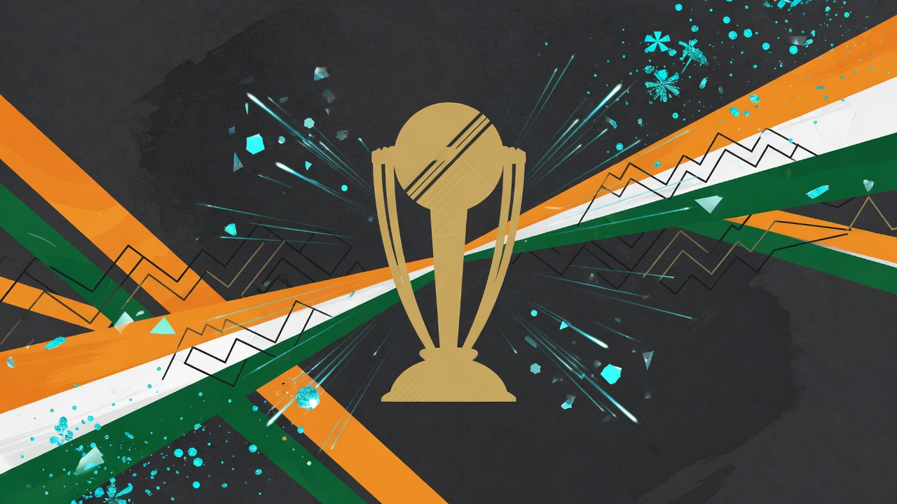
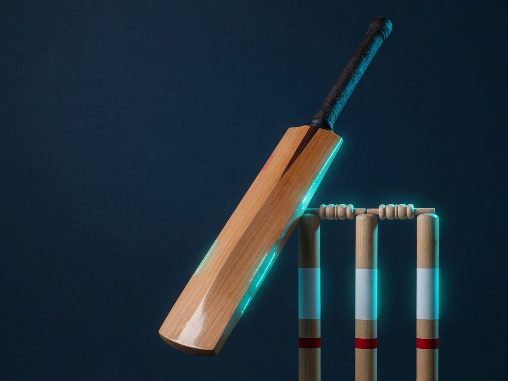
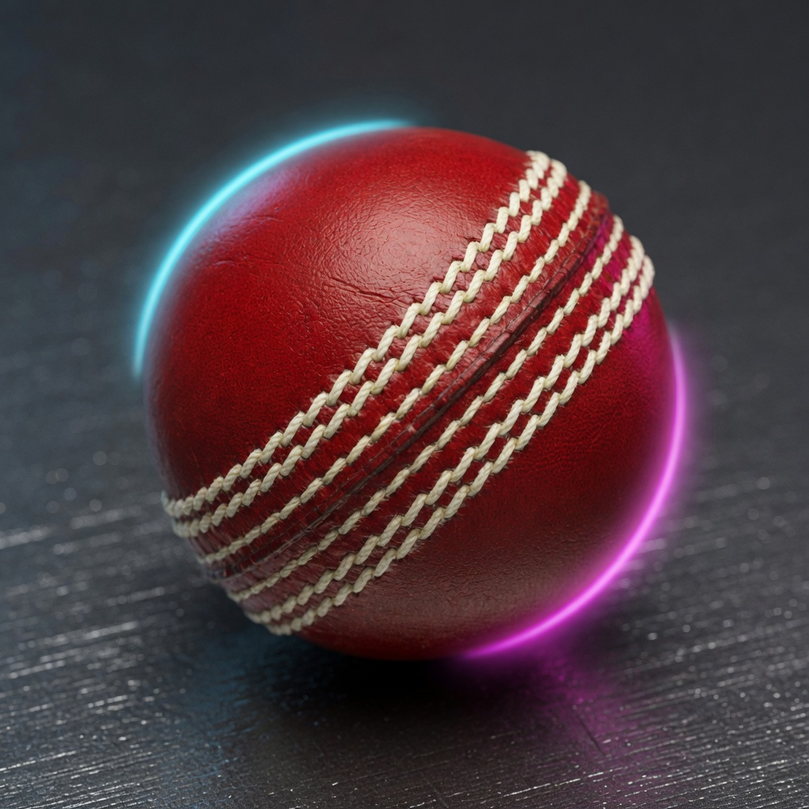

Loading Team India data…
Official Team India records
Verified career statistics across Tests, ODIs and T20Is — independent of this folder’s ball-by-ball archive. Source dates shown per format.

ICC trophy cabinet
Men’s seniorKey milestones
Format-by-format
Team results and landmark scores from official public records
All-time icons
Career landmarks that define Indian cricket history
Player gallery
Portraits from Wikipedia / Wikimedia Commons (used on this dashboard)

Test head-to-head
As of June 2026| Opponent | P | W | L | D | T |
|---|

Sources & methodology
Other pages on this site use the local Cricsheet / recovered match files and may not match full career totals. Use Official Records for correct all-time figures.
India by the numbers
Analytics from matches in this folder — batting, bowling, venues, and coverage. For full career totals see .
Results by format
Win / Loss / DrawYearly win rate
All formatsHome vs Away
Toss impact
Bat first vs Chase
ODI + T20Top run-scorers
Top wicket-takers
Recent results
| Date | Format | Opponent | Result | Margin | Venue | PoM |
|---|
Format breakdown
Test · ODI · T20I performance from this dataset
Matches per year by format
Win share by format
Batting records
India batters · ball-by-ball aggregates in this archive
| # | Player | Mat | Inn | Runs | HS | Avg | SR | 50s | 100s | 4s | 6s | NO | Ducks |
|---|
Bowling records
India bowlers · wickets, economy, best figures
| # | Player | Mat | Inn | Overs | Runs | Wkts | BBI | Avg | Econ | SR | 4W | 5W | Mdns |
|---|
Fielding & keeping
Catches, stumpings and run-outs credited to India players
| # | Player | Matches | Catches | Stumpings | Run-outs | Total dismissals |
|---|
Most Player of the Match awards
Head-to-head
India vs every opponent in this dataset
Win % vs opponents (min 10 matches)
| Opponent | P | W | L | D | T | NR | Win% | By format |
|---|
Venues
Where India played · home & away form
| Venue | City | Home | P | W | L | D/T/NR | Win% |
|---|
Archive team & individual records
Highest totals and best figures from matches in this folder · for full career see
Highest team totals
| Score | Fmt | vs | Date | Venue |
|---|
Lowest team totals
| Score | Fmt | vs | Date | Venue |
|---|
Highest individual scores
| Player | Runs | Balls | Fmt | vs | Date |
|---|
Best bowling figures
| Player | Figures | Overs | Fmt | vs | Date |
|---|
Biggest wins (by runs)
| Margin | Fmt | vs | Date | Venue |
|---|
Biggest wins (by wickets)
| Margin | Fmt | vs | Date | Venue |
|---|
Match browser
All matches in the archive
| Date | Fmt | Opponent | Result | Margin | Venue | Event | PoM |
|---|
Coverage & missing matches
What this folder covers — and what it doesn’t
Ball-by-ball files in this folder plus recovered matches. Full India history is larger. See for correct career totals.
Coverage vs official career totals
Official totals are approximate career figures (Wikipedia / ICC, mid-2026). Dataset ends at latest match in the folder.
Why matches are missing
Dataset window
Estimated missing by format
| Format | In this folder | Official ~total | Est. missing | Coverage | Notes |
|---|